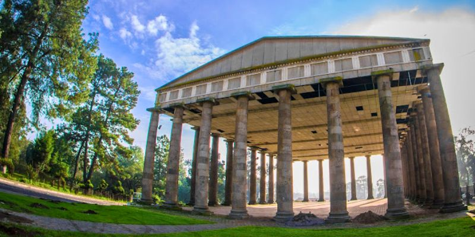

Templo de Minerva
El Templo de Minerva inaugurado en 1901 conocido también
como “El Palacio de la Ciencia”, se ubicaba al final de la avenida de
Jocotenango, fue de estilo jónico romano, con seis columnas de 25
metros de longitud en cada uno de sus lados, los capiteles tenían
relieves con temas alusivos a la sabiduría. Resistió los terremotos de
1917-18, pero fue demolido finalmente en 1953 para ampliar el
diamante de béisbol Minerva.
Se dinamitó por órdenes del gobierno revolucionario por
asuntos ideológicos, puesto que no se quería conservar vestigios de
los gobiernos liberales.